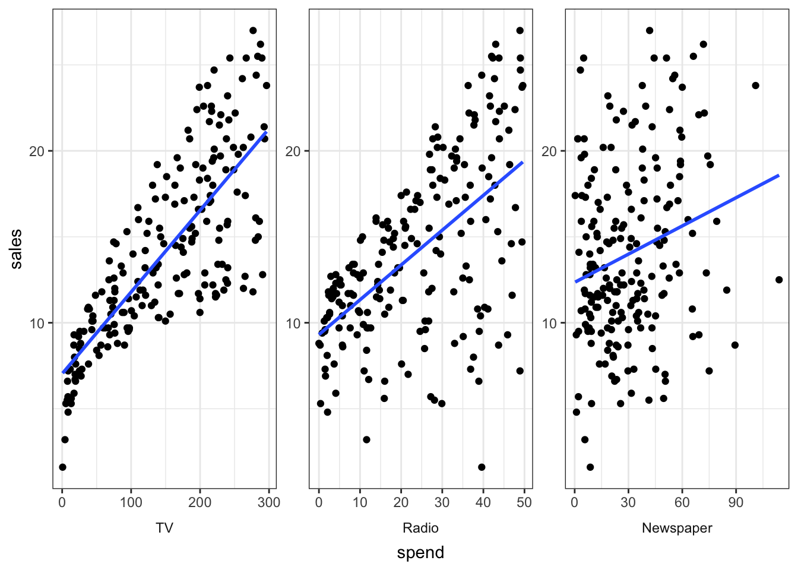
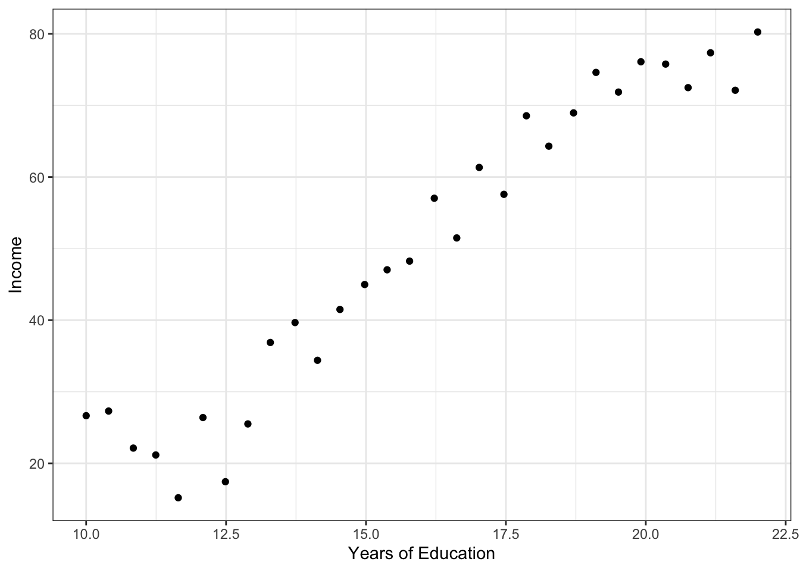
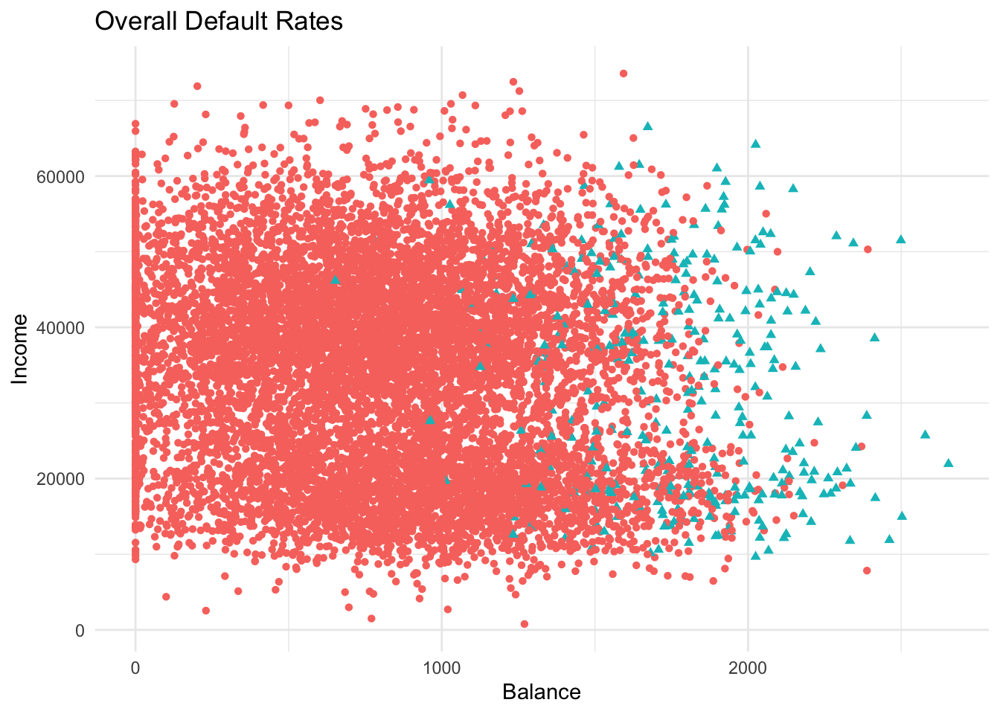
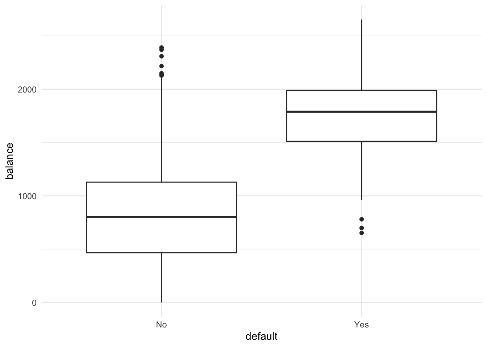
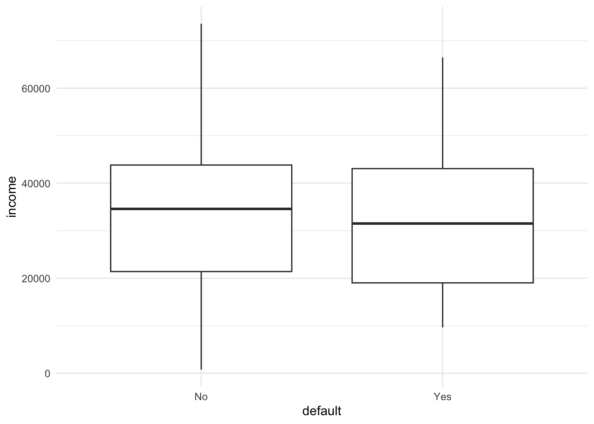

library(tidyverse)ISLR Notes
Libraries
Chapter 2: Statistical Learning
Figure 2.1
While reading the main textbook, it will be helpful to make a list of flashcards of basic terms and definitions that are italicized in the chapters. The first key set of terms are input variables and output variables. Input variables go by lots of names, but the main commonality is that input variables go on the right hand side of an equation.1 Output variables are the outputs of the function we seek to learn using the input variables.
## Anything that follows a # inside a R code block is a comment
## We use them to provide notes to ourselves or others
## about what a line or lines of code do to help solve
## the problem we are working on.
## I personally find ## easier to read than #.
## Most of my comments here relate to where you find certain functions
## in the set of tidyverse packages.
## Learning what you want to do is as important
## as learning where functions are located.
## readr::read_csv()
ads = read_csv("https://www.statlearning.com/s/Advertising.csv",
show_col_types = FALSE) |>
## Remove the row names
## dplyr::select()
select(-`...1`)
ads |>
## tidyr::pivot_longer()
pivot_longer(-sales,
names_to = "type",
values_to = "spend") |>
## dplyr::mutate, dplyr::case_when(), stringr::str_detect, stringr::str_to_title()
mutate(type = case_when(
str_detect(type, "TV")~"TV",
TRUE~str_to_title(type)
)) |>
## ggplot2 for all functions unless noted
ggplot(aes(spend,
sales,
group = type))+
geom_point() +
## forcats::fct_rev()
facet_wrap(~fct_rev(type),
scales = "free",
strip.position = "bottom")+
theme_bw()+
geom_smooth(method = "lm",
se = F)+
theme(strip.background = element_blank(),
strip.placement = "outside")
The base version of this figure is slightly more annoying, but that’s just my opinion. You may prefer it.
ads = read.csv("https://www.statlearning.com/s/Advertising.csv",
stringsAsFactors = FALSE)
ads = ads[,-1]
ads_long = ads |>
reshape(direction = "long",
v.names = "spend",
timevar ="type",
times = names(ads[c(1:3)]),
varying = c(1:3))
ads_long$type = ifelse(ads_long$type != "TV",
tools::toTitleCase(ads_long$type),
ads_long$type)
ads_long |>
## ggplot2 for all functions unless noted
ggplot(aes(spend,
sales,
group = type))+
geom_point() +
## forcats::fct_rev()
facet_wrap(~fct_rev(type),
scales = "free",
strip.position = "bottom")+
theme_bw()+
geom_smooth(method = "lm",
se = F)+
theme(strip.background = element_blank(),
strip.placement = "outside")
Figure 2.2
income = read_csv("https://www.statlearning.com/s/Income1.csv",
show_col_types = FALSE) |>
## Another way to remove the first column
## tidyselect::contains()
select(-contains("."))
income |>
ggplot(aes(Education, Income))+
geom_point()+
ylab("Income")+
xlab("Years of Education")+
theme_bw()
We can think of the fundamental learning problem of interest that of learning some function that relates our output and input variables.
\begin{aligned} Y = f(X) + \epsilon \end{aligned}
Y corresponds to the output variable and X is a vector of input variables. The \epsilon (epsilon) is the random error term, for which we may or may not make an assumption about. Usually when we make assumptions it is that it is independent of X and (trivially because we can always normalize a set of values) has mean zero.
Why Estimate f?
Prediction
To be frank (and opinionated), prediction is the reason why we most of the time people are interested in machine learning. We have a set of input variables, and we use them to estimate our function of interest. Over the course of the semester, we will learn some different ways to estimate this function but the most common estimation strategy is some form of regression.
We determine if our prediction is any good by some metric. A common one might be accuracy. How often does our prediction get sufficiently close to our observed output variables. We break this up into reducible and irreducible errors. Reducible error is something we can make smaller, often by collecting more or better data. Irreducible error is something we are stuck with because it is a function of a variable we can never collect data about (that pesky \epsilon).
We can decompose the expected error into reducible and irreducible parts.
\begin{aligned} E(Y-\hat{Y})^2 &= E[f(X) + \epsilon - \hat{f}(X)]^2 \\ E(Y-\hat{Y})^2 &= E[f(X) + \epsilon - \hat{f}(X)]E[f(X) + \epsilon - \hat{f}(X)] \\ E(Y-\hat{Y})^2 &= E[f(X)^2 + 2f(X)\epsilon - 2f(X)\hat{f}(X) + \epsilon^2 - 2\epsilon\hat{f}(X) + \hat{f}(X)^2] \\ E(Y-\hat{Y})^2 &= E[f(X)^2 - 2f(X)\hat{f}(X) + \hat{f}(X)^2] + E[\epsilon^2] \\ E(Y-\hat{Y})^2 &= E[(f(X)^2 - \hat{f}(X))^2] + V[\epsilon] \\ E(Y-\hat{Y})^2 &= [f(X)^2 - \hat{f}(X)]^2 + V[\epsilon] \end{aligned}
How did we do that?
The second line expands out the squared term.
The third line applies the identity that (x+y-z)^2 = x^2 + 2xy - 2xz + y^2 -2yz + z^2.
The fourth line does a couple of steps at once based on properties of the expectation operator: E[c] = c, E[x + y] = E[x] + E[y] and then groups terms.
The fifth line substitutes in the appropriate definition of the variance and condenses the square. The sixth line applies the expectation of a constant property again.
Irreducible error matters because the irreducible error bounds the accuracy of our predictions of Y, and we never actually know what it is in practice.
Inference
The book notes that another reason we care about the relationship between input and output variables is to learn something about their association. Note here the word “association” which does mean related but does not imply that the input variables cause the output variables. That is a separate problem of causal inference. People are sloppy all the time about this, but for the purpose of learning you should always be clear about when the inference you are drawing is causal.2
How do we estimate f?
Suppose we observe a set of n different data points. We call these observations training data because we use them to train our estimation method how to estimate f our function of interest. In the book’s notation:
\begin{aligned} \{(x_1, y_1),...,(x_n, y_n)\}, x_i = (x_{i1}, ...x_{ip})^T \end{aligned}
That compact expression looks confusing if we have not seen them before, but all it is seeing is that we have a set of realizations of input variables X and output variable y and each X is the realization of of the vector of input variables. Here’s an example in code.
## number of training data pairs
set.seed(123)
n = 5
## tibble::tibble()
training_data = tibble(
x1 = rnorm(n),
x2 = rnorm(n),
x3 = rnorm(n),
y = x1 + x2 + x3 + runif(n)
) |>
## dplyr::relocate()
relocate(y, .before = x1)
training_data# A tibble: 5 × 4
y x1 x2 x3
<dbl> <dbl> <dbl> <dbl>
1 3.34 -0.560 1.72 1.22
2 1.49 -0.230 0.461 0.360
3 1.39 1.56 -1.27 0.401
4 0.290 0.0705 -0.687 0.111
5 -0.848 0.129 -0.446 -0.556## Base version
n = 5
set.seed(123)
training_data = data.frame(
x1 = rnorm(n),
x2 = rnorm(n),
x3 = rnorm(n)
)
training_data[["y"]] = training_data$x1 + training_data$x2 + training_data$x3 + runif(n)
training_data = training_data[union("y", names(training_data))]
training_data y x1 x2 x3
1 3.3416954 -0.56047565 1.7150650 1.2240818
2 1.4928516 -0.23017749 0.4609162 0.3598138
3 1.3851238 1.55870831 -1.2650612 0.4007715
4 0.2898057 0.07050839 -0.6868529 0.1106827
5 -0.8476017 0.12928774 -0.4456620 -0.5558411The other part of that equation that might be strange to you is the T at the end. This is the symbol for transpose, and is done because by convention we think of all of the operations as column operations.
Parametric Methods
Parametric means that we make some assumptions about the parameters of the function. For example, we might assume that the function is linear in parameters, or that no value can ever be above 42, or a host of other possible assumptions.
In parametric modeling, we first make an assumption about the functional form of the f and then follow some procedure to estimate a model of that functional form.
What’s the benefit? Well since we have assumed that the problem must look a certain way, estimating the function is now much easier. The downside (and there is always a downside in everything) is that if we are wrong about this assumption we will be very wrong. Some parametric assumptions (linear function) tend to be used a lot.
Non-parametric Methods
Non-parametric methods do not make explicit assumptions about the functional form of the function of interest. Instead, they simply seek to estimate it in a way that flexibly fits the data without fitting too well. We will see what that means as we move through the book, but the word to get familiar with is overfitting.
Note that for both parametric and non-parametric methods the reason why we care about overfitting is that we are seeking to learn about some function f based on our training data, not what the best functional fit of the data we have is. Overfitting only matters because we do not care about the training data for its own sake, but rather what it can tell us about future observations.
Supervised and Unsupervised Learning
Supervised learning implies that we have some observations for which we know the outputs. It is “supervised” because we are telling our machine assistant what is the correct answer. The vast majority of prediction problems are supervised learning problems. Unsupervised learning occurs when we do not have a correct output variable to predict, but still seek to understand relationships between variables or between observations. Unsupervised topic models would be an example of the latter in text analysis.
Regression vs. Classification
Because methods come from different disciplines, there is some confusing vocabulary distinctions. For the purpose of this book, when you hear a regression problem, you should think of trying to predict a continuous or quantitative output variable. Is more advertising associated with increased sales is a regression problem. In contrast a classification problem deals with ordinal or nominal data where the goal is the predict what bucket a set of observations might fall into. Will a person with a set of attributes be likely to get into Cal is a classification problem.3
Assessing Model Accuracy
There are an infinite number of possible models that we can use to estimate our function of interest given our input variables and output variables. Therefore we need some way to determine which model is “best” and so also need some metric to define “best.” A common one in the regression setting is Mean Squared Error (MSE).
\begin{aligned} MSE = \frac{1}{n}\sum_{i=1}^n(y_i - \hat{f}(x_i))^2 \end{aligned}
Mean Squared Error is an example of a “loss function.” By its name, you might infer correctly that the goal is to pick the model that has the smallest loss function of interest. Examine the equation for MSE to convince yourself that the MSE will be as low as possible if the prediction that our estimate gives is identical to the true value of our observed output variable.
As stated earlier, we do not care about the MSE of the training data per se. We care about the MSE of our learning method on unseen data, which is often referred to as test data. Supposing that we have a large number of training observation to estimate a model, we simply sub in new data pairs into the above equation to get the test MSE.
One key point regarding flexibility of models is that as the flexibility of our model increases (the fewer assumptions we put on functional form) we will observe a decrease in the training MSE and a U shape in the test MSE. Overfitting occurs when we have a low training MSE but a high test MSE.
Bias-Variance Tradeoff
The most important trade-off in all of machine learning is the Bias-Variance tradeoff. Bias refers to (loosely) how off our estimate of the true function would be as the number of training examples gets very large. Formally the bias of some statistic \theta is $B[\theta] = E[\theta - \hat{\theta}]$. We can think of bias as the error introduced by approximating the problem of interest. Variance on the other hand refers to how much our estimate \hat{f} would change if we had used a different training data set. High variance means that a small change in the training data leads to a large change in \hat{f}.
The book gives the following equation for the decomposition of the MSE into the variance of our estimator, the squared bias of our estimator and the error term.4
\begin{aligned} E[y_0 - \hat{f}(x_0)]^2 = V[\hat{f}(x_0)] + [B(\hat{f}(x_0))]^2 + V[\epsilon] \end{aligned}
What does this equation tell us about the expected MSE on the test set. First, notice that every quantity is non-negative. Second, notice that irreducible error is part of the equation and serves as the upper bound because even if we had an estimate that had no variance and no bias, we would still have V[\epsilon] left over.
The Bias-Variance tradeoff tells us that good test set performance has low bias and low variance. The tradeoff is that we can always draw some curve to the data at hand that perfectly captures every data point, but if we take that method to a different set of data points we will have increased variance. Conversely, we can always make variance 0 by fitting a horizontal line through data, but this will be unlikely to capture the true fit of the function increasing bias.5
Classification Loss Functions
Accuracy in the classification setting is conceptually similar with appropriate changes for the fact that we are now interested in the training error rate, the proportion of mistakes if we apply our learned estimate to the training observations.
\begin{aligned} Err = \frac{1}{n}\sum_{i=1}^nI(y_i \neq \hat{y}_i) \end{aligned}
The lowest test error occurs via the Bayes Classifier a method that assigns each observation to the most likely class given predictor values.
\begin{aligned} BC = Pr(Y=j|X = x_0) \end{aligned}
and the overall error rate will be 1 - E[\max_{\j} Pr(Y=j|X)), analogous to irreducible error in the classification case.
Lab
The lab at the end of Chapter 2 just reproduces some basic R functions.
## Make a vector
x = c(1,6,2)
y = c(1,4,3)
## Element wise addition
x + y [1] 2 10 5## Make a matrix
x = matrix(data = c(1,2,3,4),
nrow = 2,
ncol = 2,
byrow = TRUE)
x [,1] [,2]
[1,] 1 2
[2,] 3 4sqrt(x) [,1] [,2]
[1,] 1.000000 1.414214
[2,] 1.732051 2.000000## Generate some random normal realizations
set.seed(123)
x = rnorm(500)
y = x + rnorm(50, mean = 50, sd = .1)
cor(x,y)[1] 0.995881Indexing Data
I’m choosing to skip the graphics section because this class uses the tidyverse and because base R graphics look ugly to me without extensive customization.
Indexing is incredibly important in any programming. A key note in R is that it is a 1 based index instead of a 0 based index.
A = matrix(1:16, 4,4, byrow = T)
A [,1] [,2] [,3] [,4]
[1,] 1 2 3 4
[2,] 5 6 7 8
[3,] 9 10 11 12
[4,] 13 14 15 16A[2,3][1] 7## We can also get slices
A[c(1,3), c(2,4)] [,1] [,2]
[1,] 2 4
[2,] 10 12A[1:3, 2:4] [,1] [,2] [,3]
[1,] 2 3 4
[2,] 6 7 8
[3,] 10 11 12A[1:2,] # Getting just the first two rows [,1] [,2] [,3] [,4]
[1,] 1 2 3 4
[2,] 5 6 7 8A[,1:2] # first two columns [,1] [,2]
[1,] 1 2
[2,] 5 6
[3,] 9 10
[4,] 13 14A[-c(1,3),] # get only 2 and 4th row [,1] [,2] [,3] [,4]
[1,] 5 6 7 8
[2,] 13 14 15 16Exercises
Problem 7
Here is an example of applying a function to a data set.
knn_data = tibble(
id = 1:6,
x1 = c(0,2,0,0,-1,1),
x2 = c(3,0,1,1,0,1),
x3 = c(0,0,3,2,1,1),
y = c("red", "red", "red","green","green","red")
)
getEuclideanDistance = function(point = c(0,0,0), vec){
dist = sqrt((vec[1]- point[1])^2 + (vec[2]-point[2])^2 + (vec[3]-point[3])^2)
return(dist)
}
getClosestPoints = function(k){
}
knn_data |>
rowwise()|>
mutate(d = getEuclideanDistance(vec = c(x1, x2, x3)))# A tibble: 6 × 6
# Rowwise:
id x1 x2 x3 y d
<int> <dbl> <dbl> <dbl> <chr> <dbl>
1 1 0 3 0 red 3
2 2 2 0 0 red 2
3 3 0 1 3 red 3.16
4 4 0 1 2 green 2.24
5 5 -1 0 1 green 1.41
6 6 1 1 1 red 1.73Chapter 3: Linear Regression
Linear regression is a simple approach for supervised learning. We might use it to determine if a relationship exists between variables, the strength of the (linear) relationship, associations between multiple variables, or whether there are interaction effects.6
The relationship we seek to fit is $$Y \approx B_i\textbf{X}$$ where we have a series of input variables in a design matrix \textbf{X} and want to predict an output Y.
There are lots of ways to do this in R.
- We can do it by hand
## We will use the advertising data
Y = as.matrix(ads[, "sales"])
x = as.matrix(ads[, c("TV")])
## We add an intercept term
intercept = rep(1, nrow(ads))
X = as.matrix(cbind(intercept, x))
## (X'X)^-1X'y is the OLS estimator for any number
## of input variables X
## The RHS of this is the way to do matrix multiplication and
## the inverse and transpose operations in R
betas = solve(t(X) %*% X)%*%t(X)%*%Y
betas [,1]
intercept 7.03259355
0.04753664### Calculate residuals
resids = Y - X%*%betas
### Get degrees of freedom
df = nrow(X) - ncol(X) - 1
### Calculate residual variance
resids_v = sum(resids^2)/df
### Get covariance matrix
beta_cov = resids_v * solve(t(X)%*%X)
## Takes the square root of the diagonal of the covariance matrix
## to get standard errors
beta_se = sqrt(diag(beta_cov))
round(data.frame(betas, beta_se),3) betas beta_se
intercept 7.033 0.459
0.048 0.003- We can use the base default
lm()
## broom tidy is a way to get the output of lm into a data frame
## Note that you will need to install the package before using
broom::tidy(lm(sales ~ TV, data = ads))# A tibble: 2 × 5
term estimate std.error statistic p.value
<chr> <dbl> <dbl> <dbl> <dbl>
1 (Intercept) 7.03 0.458 15.4 1.41e-35
2 TV 0.0475 0.00269 17.7 1.47e-42Note that our calculation “by hand” matches the estimate and standard errors of the default function.
- We can use (and should!) a function from a package that lets us have better standard error estimation.
## fixest is a created package, so must be installed before using
broom::tidy(fixest::feols(sales ~ TV, data = ads))# A tibble: 2 × 5
term estimate std.error statistic p.value
<chr> <dbl> <dbl> <dbl> <dbl>
1 (Intercept) 7.03 0.458 15.4 1.41e-35
2 TV 0.0475 0.00269 17.7 1.47e-42The Math
The optimization problem is to take a set of data points \{(x_1, y_1),…(x_n,y_n)\} that represent n observation pairs. In the model in the chapter the points are the TV advertising budget and the product sales. We want to fit a model that minimizes the least squares criterion, which is our loss function. This model amounts to minimizing the total error between our model fit and all of the data points.7 The errors are defined by the residuals, and the residual sum of squares RSS is (y_1 - \hat{\beta_0} - ...\hat{\beta_nx_n)^2 + ... (y_n - \hat{\beta_0}x_n)^2}. In words, we make some guesses about our beta coefficients and then subtract the prediction \hat{\beta_i}x_i from the actual value observed.
It turns out in the simple linear regression case, the minimizes for this equation are:
\begin{aligned} \hat{\beta_0} &= \bar{y} - \hat{\beta_1}\bar{x} \\ \hat{\beta_1} &= \frac{\sum_{i=1}^n(x_i - \bar{x})(y_i - \bar{y})}{\sum_{i=1}^n(x_i - \bar{x})^2} \end{aligned}
The numerator in the second estimate the covariance between the vectors and the denominator is the variance of the input variables. The values with bars over them represent the sample means.
## In code
beta1 = cov(ads[["TV"]], ads[["sales"]]) / var(ads[["TV"]])
beta0 = mean(ads[["sales"]], na.rm = T) - beta1 * mean(ads[["TV"]], na.rm = T)
rbind(beta0, beta1) [,1]
beta0 7.03259355
beta1 0.04753664To assess uncertainty we compute standard errors. The formulas associated with the two coefficients are:
\begin{aligned} SE_{\hat{\beta_0}} &= \sigma^2[\frac{1}{n} + \frac{\bar{x}^2}{\sum_{i=1}^n(x_i - \bar{x})^2}] \\ SE_{\hat{\beta_1}} &= \frac{\sigma^2}{\sum_{i=1}^n(x_i -\bar{x})^2} \end{aligned}
## in code
## How far off are we?
sigma_squared = var(ads[["sales"]]- beta0 - beta1*ads[["TV"]])
## For readability purposes
numerator = sigma_squared*mean(ads[["TV"]]^2)
denominator = sum((ads[["TV"]]-mean(ads[["TV"]]))^2)
var_beta0 = numerator / denominator
se_beta0 = sqrt(var_beta0)
var_beta1 = sigma_squared / denominator
se_beta1 = sqrt(var_beta1)
rbind(se_beta0, se_beta1) [,1]
se_beta0 0.456691132
se_beta1 0.002683838If we want a confidence interval, we take the coefficient and multiply it plus/minus some critical value times the standard error.
## approximately 95% confidence intervals
lower_bound = beta1 - 2*se_beta1
upper_bound = beta1 + 2*se_beta1
rbind(lower_bound, upper_bound) [,1]
lower_bound 0.04216896
upper_bound 0.05290432The t-statistic is defined as the coefficient divided by the standard error
## We'll get a slightly different answer here due to floating point operations and the calculation of the generalized variance
beta1 / se_beta1[1] 17.71218Multiple Regression
Everything that we have done so far generalizes to the multiple regression case. This is good because if it did not we likely would have made a basic category error.
A word on interactions
If you have an interaction in your model, you always need to put the separate variables into the model (e.g. the main effects). To add interactions into a model, we simply multiply variables together. Here are two commons ways to do that in R.
broom::tidy(lm(sales ~ TV + radio + TV*radio, data = ads))# A tibble: 4 × 5
term estimate std.error statistic p.value
<chr> <dbl> <dbl> <dbl> <dbl>
1 (Intercept) 6.75 0.248 27.2 1.54e-68
2 TV 0.0191 0.00150 12.7 2.36e-27
3 radio 0.0289 0.00891 3.24 1.40e- 3
4 TV:radio 0.00109 0.0000524 20.7 2.76e-51broom::tidy(lm(sales ~ TV + radio + TV:radio, data = ads))# A tibble: 4 × 5
term estimate std.error statistic p.value
<chr> <dbl> <dbl> <dbl> <dbl>
1 (Intercept) 6.75 0.248 27.2 1.54e-68
2 TV 0.0191 0.00150 12.7 2.36e-27
3 radio 0.0289 0.00891 3.24 1.40e- 3
4 TV:radio 0.00109 0.0000524 20.7 2.76e-51## Also works in fixest
broom::tidy(fixest::feols(sales ~ TV + radio + TV:radio, data = ads))# A tibble: 4 × 5
term estimate std.error statistic p.value
<chr> <dbl> <dbl> <dbl> <dbl>
1 (Intercept) 6.75 0.248 27.2 1.54e-68
2 TV 0.0191 0.00150 12.7 2.36e-27
3 radio 0.0289 0.00891 3.24 1.40e- 3
4 TV:radio 0.00109 0.0000524 20.7 2.76e-51Similarly, if we want to include powers, we simply add in the appropriate order.
auto = read_csv("https://www.statlearning.com/s/Auto.csv", na = c("?",NA)) |>
## drop missing
na.omit()
## poly is more flexible, raw = T makes it equivalent to the
## the next way to do it. poly by default only uses orthogonal
## terms. Raw terms are likely to have collinearity
broom::tidy(lm(mpg ~ poly(horsepower, 2, raw=T), data = auto))# A tibble: 3 × 5
term estimate std.error statistic p.value
<chr> <dbl> <dbl> <dbl> <dbl>
1 (Intercept) 56.9 1.80 31.6 1.74e-109
2 poly(horsepower, 2, raw = T)1 -0.466 0.0311 -15.0 2.29e- 40
3 poly(horsepower, 2, raw = T)2 0.00123 0.000122 10.1 2.20e- 21## alternatively
broom::tidy(lm(mpg ~ horsepower + I(horsepower^2), data = auto))# A tibble: 3 × 5
term estimate std.error statistic p.value
<chr> <dbl> <dbl> <dbl> <dbl>
1 (Intercept) 56.9 1.80 31.6 1.74e-109
2 horsepower -0.466 0.0311 -15.0 2.29e- 40
3 I(horsepower^2) 0.00123 0.000122 10.1 2.20e- 21Chapter 4: Classification
We keep the same setting as before. We have a set of training observations that we can use as a classifier. We want the classifier to perform well not only on the training data, but also on data it has not seen before.
### replicating Figure 4
default = ISLR2::Default
default |>
ggplot(aes(balance, income, color = default, shape = default))+
geom_point()+
theme_minimal()+
theme(legend.position = "none")+
labs(title = "Overall Default Rates",
x = "Balance", y = "Income")
## Box plots
default |>
ggplot(aes(default, balance))+
geom_boxplot()+
theme_minimal()
default |>
ggplot(aes(default, income))+
geom_boxplot()+
theme_minimal()
Why Not Linear Regression?
In cases of qualitative response with multiple non-ordinal quantities, the coding of cases will affect the output in ways that we do not want it do. Since there is no natural way to convert a qualitative response with more than two levels, we shouldn’t use linear regression in this case.
In the binary case there’s really no problem, though the book mentions that you can get predictions greater than 1 or less than 0. Whether this is actually a problem is an open question since you can always just truncate and the linear regression approach will be the same as for linear discriminant analysis approaches.
Logistic Regression
A logistic regression models the probability that Y belongs to a particular category. A logistic regression is so called because we model the probability with the logistic function.
p(X) = \frac{e^{\textbf{X}\beta }}{1 + e^{\textbf{X}B}} We fit this model via maximum likelihood. We tend to use the odds for interpretation.
\frac{p(X)}{1 - p(X)} = e^{\textbf{X}\beta} The odds can take on any value between 0 and infinity. Taking the logs of both sides reduces that equation to
log \left(\frac{p(X)}{1 - p(X)}\right)= \textbf{X}\beta The interpretation of a \beta coefficient is as follows. Increasing X_i by one unit changes the log odds by \beta_i. Because the relationship between p(X) and X is not a straight line, it is not correct to interpret \beta_i as a marginal change in p(X) associated with a one-unit increase in X_i.
Estimating a logistic regression
We use maximum likelihood. We’ll consider the simple binary case where we have coefficients \beta_0 and \beta_1 to estimate.
l(\beta_0, \beta_1) = \prod_{i:y_i = 1}p(x_i)\prod_{i':y_{i'}= 0} (1- p(x_i))
In R:
logit = glm(default~balance, data = default, family = "binomial")| term | estimate | std.error | statistic | p.value |
|---|---|---|---|---|
| (Intercept) | -10.6513306 | 0.3611574 | -29.49221 | 0 |
| balance | 0.0054989 | 0.0002204 | 24.95309 | 0 |
To get the log-odds
## We're passing in the default value of the intercept
## and a balance of $1000 to match the predictions example
betas = logit$coefficients %*% c(1,1000)
odds = 1/(1+exp(-betas))
odds [,1]
[1,] 0.005752145Let’s try another example
l2 = glm(default ~ student, data = default, family = "binomial")
## default for student
betas = l2$coefficients %*% c(1,1)
yes = exp(betas)/ (1 + exp(betas))
yes [,1]
[1,] 0.04313859Multiple Logistic Regression
The generalization works the same way as in the linear regression case.
Chapter 5: Resampling Methods
Cross Validation
Recall that there is a distinction between training error rate and test error rate. The training error rate is the average error that results from using a method on the training data. The test error rate the average error from using a learning method to predict the response on the new observation not from the training data.
Validation Set Approach
Suppose we want to estimate the test error associated with fitting a particular learning method on a set of observations. In the Validation Set approach, we randomly divide the available observations into a training set and a validation set. We fit the model on the training data, and the fitted model is used to predict the responses for the validation set.
set.seed(1)
auto = ISLR2::Auto
## Randomly split the 392 observations into two
## sets of 196 observations
idx = sample(392, 196, replace = F)
train = auto[idx,]
test = auto[-idx,]
model = lm(mpg ~ horsepower, data = train)
preds = predict(model, test)
mse_pred = mean((auto$mpg[-idx] - preds)^2)There are some drawbacks with just using a single validation set.
- Validation estimates of the test error rate can be highly variable, depending on what observations are included.
- Since only a subset of observations are used to fit the model, validation set error rate may tend to overestimate the test error rate for the model fit on the entire dataset.
Cross validation addresses these two issues.
Footnotes
Strictly speaking, input variables are arguments to the fixed but unknown function f that we are trying to learn.↩︎
Whether non-causal inferences are interesting is a separate question.↩︎
This distinction is annoying to someone who comes at these questions from a different discipline. Much of the machine learning literature’s hodgepodge of terms tells you more about the authors’ educational background as it does the problem at hand.↩︎
The derivation is boring. Recall the decomposition of error and add and subtract E[\hat{f}] from the right hand side. Group the terms together and substitute in appropriate named quantitites.
\begin{aligned} E[Y-\hat{Y}]^2 &= E[(f- \hat{f})^2] + V[\epsilon] \\ E[Y-\hat{Y}]^2 &= E[f + E[\hat{f}] - E[\hat{f}] - \hat{f}] + V[\epsilon] \\ E[Y-\hat{Y}]^2 &= E[\hat{f} - E[\hat{f}]]^2 + [f - E[\hat{f}]]^2 + V[\epsilon] \\ E[Y-\hat{Y}]^2 &= V[\hat{f}] + B[\hat{f}]^2 + V[\epsilon] \end{aligned} ↩︎
In causal inference, we tend to care a lot more about the bias of our estimator than the variance.↩︎
The book often refers to this as “synergy”↩︎
Note that this sounds an awful lot like finding an average and that is intentional.↩︎